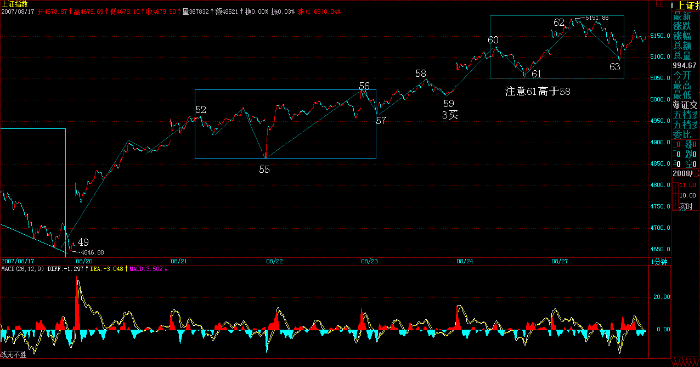

|
 |
教你炒股票73：市场获利机会的绝对分类
(2007-08-23 22:35:20)
说起获利，最一般的想法就是低买高卖就获利，但这是一种很笼统的看法，没什么操作和指导意义。任何市场的获利机会，在本ID理论下，都有一个最明确的分类，用本ID理论的语言来说，只有两种：中枢上移与中枢震荡。
显然，站在走势类型同级别的角度，中枢上移就是意味着该级别的上涨走势，而中枢震荡，有可能是该级别的盘整，或者是该级别上涨中的新中枢形成后的延续过程。任何市场的获利机会，都逃脱不了这两种模式，只是百姓日用而不知，本ID理论而知。
在你的操作级别下，中枢上移中，是不存在着任何理论上短差机会的，除非这种上移结束进入新中枢的形成与震荡。而中枢震荡，就是短差的理论天堂。只要在任何的中枢震荡向上的离开段卖点区域走掉，必然有机会在其后的中枢震荡中回补回来，唯一需要一定技术要求的，就是对第三类买点的判断，如果出现第三买点你不回补回来，那么就有可能错过一次新的中枢上移，当然，还有相当的机会，是进入一个更大的中枢震荡，那样，你回补回来的机会还是绝对的。
很多人，经常说自己按本ID的理论做短差买不回来，这没什么奇怪的。如果你连中枢都没分清楚，级别也没搞懂，中枢上移与中枢震荡也分不清楚，第三类买点就更糊涂，那也能短差成功，只能说你刚好运气好，死耗子摔到瞎猫爪子上了，天上哪能天天掉死耗子？
以上，只是在某一级别上的应用。用同一级别的视角去看走势，就如同用一个横切面去考察，而当把不同的级别进行纵向的比较，对走势就有了一个纵向的视野。
一个月线级别的上涨，在年线级别上，可能就是一个中枢震荡中的一个小段。站在年中枢的角度，如果这上涨是从年中枢之下向中枢的回拉，那么，中枢的位置，显然就构成需要消化的阻力；如果是年中枢之上对中枢的离开，那么中枢就有反拉作用。这都是一个最简单的问题。下面谈论的，是如何选择超大的机会。
人生有限，一个年中枢的上移，就构成了人生可能参与的最大投资机会。一个年的中枢震荡，很有可能就要搞100年，如果你刚好落在这样的世界里，简直是灾难。而能遇到一个年中枢的上移机会，那就是最牛的长线投资了。最牛的长线投资，就是把一个年中枢的上移机会给拿住了。
当然，对于大多数人的生命来说，可能最现实的机会，只是一个季线级别的上涨过程，这个过程没结束，没见到那新的年中枢，人已经没了。这个年中枢的上移过程，有时候需要N代人的见证。看看美国股市的图，现在还没看到那新的年中枢，依然在年中枢的上移中，想想美国股市有多少年了？
所以，对于一个最现实的获利来说，一个季度甚至月线的中枢上移，已经是足够好的一生最大的，在单个品种上的长线获利机会。
一个季度中枢的上移，可能就是一个十年甚至更长的月线上涨，能有如此动力的企业，需要怎么样的素质？即使在全球化的环境下，单个企业的规模是有其极限的。而一个能获取超级上涨的公司，也不可能突破那个极限。因此，顶已经是现实存在了，根据企业的行业，其相应的极限还有所不同。对于操作来说，唯一需要知道的，就是哪些企业能向自己行业的极限冲击。
但针对中国的企业、上市公司，我们还可以给出一个判断，就是几乎所有的行业，都必然有至少一个中国的上市公司会去冲击全球的行业理论极限。这就是中国资本市场的现实魅力所在。因为，几乎有多少个行业，就至少有多少只真正的牛股。
不过，有些行业，其空间是有限的，因此可以筛选出去。这种行业的企业，注定了，是没有季线甚至月线以上级别中枢上移的，除非他转型。因此，远离那些注定没有季线甚至月线以上级别中枢上移的行业，这些行业的企业，最终都是某级别的中枢震荡。这里，就涉及基本面的分析与整个世界经济的综合判断，谁说本ID的理论只管技术的？但任何的基本面，必须在本ID的几何理论的关照下才有意义，在这个视角的关照下，你才知道，究竟这基本面对应的是什么级别、什么类型的获利机会。
找到了行业，就到了具体企业的寻找。对于长线投资来说，最牛的股票与最牛的企业，最终是必然对应的。没有人是神仙，谁都不知道哪个是最后的获胜者。但谁都知道，最终的获胜者最终必然要到，例如10万亿人民币的市值，那么，他的市值必然要经过任何一个低于10万亿人民币的数。
这就足够了，这就马上可以百分百推理出，这个企业，或者是当下的龙头，或者是在今后某一时刻超越当下龙头的企业。有这样一个推论，本ID就可以构建出一个最合理的投资方案。
一、用最大的比例，例如70%，投在龙头企业（可能是两家）中，然后把其他30%分在最有成长性（可能是两三家）的企业中。注意，在实际操作中，如果龙头企业已经在基本面上显示必然的败落，那当然就选择最好的替代者，如此类推。
二、只要这个行业顺序不变，那么这个投资比例就不变，除非基本面上出现明显的行业地位改变的迹象，一旦如此，就按等市值换股。当然，如果技术面把握好，完全可以在较大级别卖掉被超越的企业，在其后的买点再介入新的龙头已经成长企业。
三、这就是本ID理论的独门武器了，充分利用可操作的中枢震荡（例如日线、周线等），把所有投资成本变为0，然后不断增加可持有筹码。注意，这些筹码，可能是新的有成长或低估价值的公司。
四、没有第四，如果一定要说，就是密切关注比价关系，这里的比价关系，就是市值与行业地位的关系，发现其中低估的品种。
注意，任何的投资，必须是0成本才是真正有意义的。
以上这个策略，就是基本面、比价关系，与技术面三个独立系统完美的组合，能这样操作股票，才有点按本ID理论操作的味道。
当然，以上，只适合大资金的操作，对于小资金，其实依然可以按照类似思路，只是只能用简略版，例如，就跟踪龙头企业，或者就跟踪最有成长性的那家。
当然，对于原始资本积累的小资金，利用小级别去快速积累，这是更快速的方法，但资金到一定规模后，小级别就没有太大意义了。
有人可能说，你怎么不说政策面？政策面那种玩意，不过是制造最多是周线级别的震荡，这正是提供技术上降低成本、增加筹码的机会。1929年、二次世界大战，都没改变美国股市年线级别的中枢移动，政策面又算得了什么？
不是每个收盘都需要一个题目
(2007-08-24 15:24:47)
今天，一开盘，首先冲到5088点，在5089点的2/3线面前整理了30分钟，然后就就突破该位置，后面基本是一个震荡，毕竟下面缺口的压力在。突破站稳1/2就到2/3，这今天实现了。下面要继续完成的任务是站稳2/3线，这是继续上攻3/4线的前提。
周末消息面很重要，如果没什么特别的东西，那么下周有一个好开头，但下周决定月线收盘，因此，下周的任务是，不能拉太大的阴线，其余的任何情况，都是可以接受的。下周，比较理性的作法，是在目前位置稳固5089点的2/3线，一般来说，这种线的突破，都至少需要周线上的确认，各位可以看看3000点与4000点对1/4与1/2线的突破就知道了。当然，如果大家一定要很冲动，要下周马上就去挑战3/4线，那周末可以先听听那首极端口水的《冲动的惩罚》。
个股方面，热点继续表演。但基金之类正规部队与游资等负规武装之间的争夺资金较量，今天有点火花了。和气生财，都别闹了。排好队，姿势优美点，能面首的自然会被面首的，和为贵。
昨晚说了那课程，可能有人会说本ID自己那10来只股票里没什么行业龙头、高成长性，不符合本ID昨天课程说的。这只是不同的眼睛看出的不同景象。首先，最明显的，000338不是龙头？600649不是？000999不是？000998不是？000777不是？甚至，连600432、600343、000099、000778，哪个不是细分行业的龙头？知道000778是离心球墨铸铁管的世界第一吗？知道离心球墨铸铁管在干什么的吗？知道全世界发达地区，排水管道用的什么？知道全中国就算排水管道更新一次，需要多少吗？知道除了排水，城镇供水输气也用着玩意吗？当然，000778还不止这些东西，知道新兴这两个字代表了多少东西吗？其他股票也一样，就不细说了。
要注意，本ID的股票可都是在极为低的位置说的，例如，000778，说的时候只有5元多，现在再买，同样的钱只能买1/3的股票不到了，这确实没办法，迟来的人，肯定要付出更大的代价，这是天经地义的。而且，这10几只股票都是去年12月底才开始说的，本ID之前买的股票可基本没怎么说过。本ID的原则就是，本ID说的时刻就是自己买的时刻。想想000999，难道忘了，本ID说有一笔新钱，过两天到，还提前先把000999给说了，这里应该有人买得比ID还便宜，例如5.9元买的。当然，本ID买那个量，建仓成本肯定比一般的散户高，早一天晚一天没什么大事。关键是后面把成本变0的本事，这一点，本ID自认天下第二，这天下就没第一了。当然，成本为0，持股决心自然也天下第一，600432，20元这里不少人买过，就半年多时间，现在谁还有？本ID可一股还不少。000338，明确告诉，肯定上100的，现在估计也没人有了，其实，这股票，100根本不值一提，想想他在行业中的地位，想想这个行业的规模，你就知道，为什么他有动力了。
周末，股票是一件最恶心的物件。
都别股票了，腐败去吧。
资金分歧日益严重的面子与里子
(2007-08-27 16:15:38)
现在，行情已经演化成这样一种格局，基金等正规部队与游资等负规武装之间展开博弈。对于基金来说，由于新鲜血液不断进来，因此，只要坚持自己的板块，就算来个五十年不变，也有新的血液进来筑成他们的长城；而对于游资来说，有不少这次是踏空的。530后，很多游资利用第一次反抽胜利大逃亡，结果不过逃了一个山脚，回头一看，什么都和他们没关系了。由此可见，游资的视角上和基金比起来，是极为短视的。当然，基金都是被正规所忽悠的人的钱，用着不心疼，就算10000倍市赢率买所谓的大盘蓝筹，也可以编出无数的理由，更不用说现在大盘蓝筹的市赢率还有很多连50都不到，至少还有200倍的忽悠空间，所以基金的长视显然是可以有恃无恐的。
游资不愿意为基金抬轿子，只能各自为战去攻击一些所谓的题材股。但这种攻击，还是有效的，因为这些所谓的题材股，基本都是中低价股票，所谓群众基础好。资本市场的管理是绝对不能走群众路线的，一走群众路线，那肯定是垃圾股满天飞。
所有的所谓成熟市场，都是分为泾渭分明的两个世界，就是正规为主的所谓蓝筹世界与负规为主的垃圾世界。这点，不用看远的，看看香港市场就知道。在资本市场，同一世界同一梦想，从来都是笑话。仙股能和汇丰长实同一世界同一梦想吗？这是世界的常态，但中国的资本市场，从大锅饭里来，总还有那无聊的做作。总是有人在资本市场也要一刀切，要问什么蓝筹垃圾，宁有种乎？
但这种游戏，最终都要被改变的。拣垃圾，在垃圾堆里寻宝的是一拨人；拿着蓝筹自渎的是另一拨人。两拨人将越来越老死不相往来，这才是最终的归宿。
现在，正在半路中，那些基金们，其实血液里也没有多少蓝筹的贵族气息，所以，偶尔混在垃圾堆里，反而觉得比较匹配；那些负规们，本来就是开野店的料，却还左摇右摆装名草，这样，行情，依然在这种边界的模糊两可中展开。
基金，不需要在二级市场骗人接筹码，而是公开地，无数人排着队争先恐后地进来成为新的举重能量。其实道理上一样，只是把赤裸裸的变成了道貌岸然的。而负规部队们，注定名声不会好了，但他们也从不在乎这玩意。负规可以潜规则正规，如此的中国特色，怎么也要特色N年，这样的负规，又有什么可抱怨的？
所谓的资金分歧，其实只是表面现象，给分歧掉的资金，不过都是不入流的资金。8228、2882，其实还不都是那唯一的一？
技术上，今天没什么可说的。回抽5089点，如此而已。当然，5089是否一天回抽就能确认，这显然不大可能。但行情完全可以先上攻，再以周线等形式进行回抽确认。当然，行情具体怎么走，没必要预测，看图作业就可以。
图形上，49点开始的走势简直是教科书。52-55的1分钟中枢，55-58的线段离开，58-59的回抽不跌回形成1分钟的第三类买点。然后，后面唯一的两种可能，更大级别中枢，与继续中枢上移直到出现新的1分钟中枢。显然，走势选择了后者，目前，可以暂时把这新的1分钟中枢看成是60-63。因此，从短线看，从49开始的1分钟上涨走势什么时候结束，就是短线唯一的主题。这相当简单，学过本ID课程的都应该怎么处理，应等待什么，那什么一出现，就该如何。（什么是什么？权当一个作业，这都不会，请复读。）

个股方面，有些人相当奇怪。竟然可以有这样的逻辑，例如对600139，他们意思是，如果不被洗干净，就不会有今天了，所以是本ID在犯坏，要把他们都给洗出去。然后这些人又在开始唠叨什么什么怎么还不怎样怎样，这些人，最该干的事情就是拿豆腐撞头去。知道本ID课程里对以前已经有的技术分析系统只说了均线系统吗？知道本ID在课程里说过，没有吻就没有高潮之类的话吗？均线系统没有粘合之前，怎么可能有单边的拉升？600139这种典型的a+A+b调整后，然后一吻高潮的走势，难道本ID在课程里没说过？就算今天的600343、000600，难道没看到前面消魂一吻吗？就算中铝这种上市没多久的，7月20日前后那一吻，请问够消魂否？
更奇怪，有人怪本ID不提前告诉中铝，30元才开始说。说老实话，本ID确实没有说任何个股的兴趣，任何个股，就算是天天暴涨的，也同样有怨大头。而且本ID现在又不当庄家了，说了明显就给自己添麻烦。有些股票知道为什么洗那么长时间吗？其实可以明确地告诉各位，就是在洗本ID。但那些家伙都是脑子有毛病，你想本ID能被他们洗出去吗？简直脑子锈了。但无论如何，不管是谁干什么，技术是第一的，任何最终都在技术图表上显现出来。如果你能成为吻的高手，那自然就能不断消魂，该说的早说了，如果吻这么私人的事情都想让别人替代去实践，那么还是买块豆腐去吧。
先下，再见。
冲动的惩罚，基金将成为毁掉市场的那只手(2007-08-27 20:45:41)
冲动的惩罚
基金将成为毁掉市场的那只手
上周末，本ID说请先听听那首极端口水的《冲动的惩罚》。那么，最近这一轮行情，发展成这样，已经越来越挑战到某些底线。
现在的问题，在下午已经说得很明确，基金利用所谓正规的身份，正制造着泡沫行情。超GDP，就是进入泡沫行情，这点，本ID在前面已经反复说得十分明确。那么这个泡沫如何才会被刺破？
显然，目前的情况下，泡沫不可能因自身破裂，基金目前这种资金正循环关系，使得泡沫可以维持相当长的时间而不破裂。
显然，在中国目前的环境下，刺破泡沫的，只有政策。而最近政策的声音，比起行情超乎寻常的安静，这只有两种可能性：
一、政策并没有觉得目前的行情有太大问题。
二、暴风雨前的安静。
政策这种东西，无法预测，上周连续两天的调控至少表明，政策面至少没有资金面那样乐观。
本ID在超GDP后，就明确说过，不再买入任何股票，而只是持有，并把可能的资金转向其他领域，最主要的原因，就是这种泡沫行情的破裂方式，其非系统性风险并不在任何人的控制之下。
今天，本ID偶尔发现，有些从1000多点就开始唱空的人，有开始松口的迹象，这给本ID特别不好的感觉，连死空头都开始转向，这风险确实已经开始如一切风险般积聚了。
可以肯定地说，如果没有政策的刺破，一切都会如基金们的如意算盘般继续下去，但冲动总要被惩罚的。惩罚来自明天、后天，还是N天后，那只有天知道了。
但一个市场，如果发展到只有惩罚才会停止下来，那就如同一个失控的车子，究竟要发生什么，那只有天知道了。
一些死空头转向，给了本ID相当不好的感觉，一叶知秋，秋天，大概也不远了。
解盘及回帖
|
|
|
|